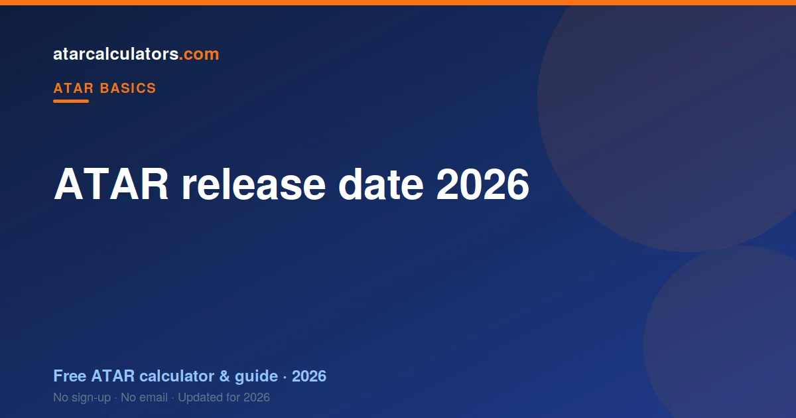

ATAR results for 2026 are released in mid-to-late December 2026, usually early in the morning. The exact date differs slightly by state, and each admissions centre confirms it closer to results day. Your Year 12 subject results arrive around the same time, and first-round university offers follow in January.
Key takeaways
- ATAR results for 2026 come out in mid-to-late December 2026.
- Results are usually released early in the morning.
- The exact date differs by state and is confirmed closer to the day.
- Your subject results arrive around the same time as your ATAR.
- First-round university offers follow in January.
- Have your admissions-centre login and contact details ready beforehand.

When do ATAR results come out in 2026?
Across the country, ATAR results land in mid-to-late December. For 2026, expect your ATAR in mid-to-late December 2026, on a weekday morning. The pattern is very consistent from year to year.
Each state’s admissions centre sets and publishes the exact date and time a few weeks beforehand. So while you can safely plan for December, check your admissions centre’s website for the confirmed date closer to the day.
Who releases your ATAR, by state
Your ATAR comes from your state’s tertiary admissions centre, not your school. Here is who releases it where:
| State | Admissions centre |
|---|---|
| NSW / ACT | UAC |
| VIC | VTAC |
| QLD | QTAC |
| SA / NT | SATAC |
| WA | TISC |
| TAS | UTAS / TASC |
The dates are close across states, usually within the same week, but not always identical. Your subject results, from your state’s school authority, come out around the same time.
How you receive your ATAR
You receive your ATAR online, through your admissions-centre account. Many centres also send an SMS or email the moment results are released. You set this up when you registered during the year.
Make sure your login works and your contact details are current well before the day. The systems are extremely busy the moment results drop, so being ready saves a stressful scramble.
When do university offers follow?
Getting your ATAR is not the same as getting an offer. After results, you finalise your university preferences, and offers are made in rounds.
The main first round usually arrives in January. Several more rounds follow through January and February, so a course you miss in the first round can still come through later. Deciding your preferences early makes this smoother.
How to prepare for results day
Two things make the day easier. First, check your login and contact details early, so you can see your result the moment it is released. Second, plan for both outcomes in advance.
Know what you will do if your ATAR beats your target, and what your backup options are if it falls short. Deciding while calm, before the number arrives, takes a lot of pressure off the day itself.
If your ATAR is not what you hoped
A lower ATAR is not the end of the road. Universities run many pathways for exactly this situation: diplomas that lead into a degree, enabling and foundation programs, and course transfers after a year of strong university marks.
Adjustment factors can also lift your selection rank above your ATAR for a course. So before results day, it is worth knowing your backup courses and pathways, so a disappointing number does not feel like a dead end.
Estimate your ATAR before results
You do not have to wait until December to get a sense of where you stand. Our ATAR calculators estimate your ATAR from your predicted or current marks, using the latest official scaling for your state.
An estimate is a guide, not your official result, but it helps you set your preferences and expectations before the real number lands.
What your results will include
On results morning you typically receive two things. From your admissions centre comes your ATAR, the rank universities use. From your state’s school authority come your subject results, the marks or study scores behind that rank.
They arrive around the same time, often on the same morning, but from two different bodies. Seeing both together lets you check that your rank makes sense against your subject results.
Your next steps after results
Once you have your ATAR, the process is not over. You finalise your university preferences, in order, and wait for offers. Many centres let you adjust your preferences after seeing your ATAR, which is worth doing if your number differs from what you expected.
Then offers come in rounds through January and February. If your first preference comes through, you accept it. If not, later rounds and pathways give you more chances, so a quiet first round is not the end of the story.
Keeping results day in perspective
Results day feels huge, and that is understandable after a long year. But the ATAR is a key for one door, not a verdict on your worth. Whatever the number, you will have options, and most students end up on a path that suits them.
Line up support for the day, whether that is family or friends, and remember that offers, pathways and second rounds all follow. The number is a starting point, not a finish line.
Common questions
When will 2026 ATAR results be released?
ATAR results for 2026 are released in mid-to-late December 2026, on a weekday morning. The exact date differs slightly by state and is confirmed by each admissions centre closer to results day.
What time of day are results released?
Results are usually released early in the morning. The exact time is published by your admissions centre beforehand, and your subject results arrive around the same time.
How will I receive my ATAR?
You receive your ATAR online through your admissions-centre account, and often by SMS or email. Set up and check your login and contact details before results day.
Do all states release ATARs on the same day?
Not always. The dates are close, usually within the same week, but each state’s admissions centre sets its own release date and time, confirmed closer to the day.
When do uni offers follow the ATAR release?
University offers come after ATARs, usually starting with a main round in January. Several rounds run through January and February, so a course missed in the first round can still come later.